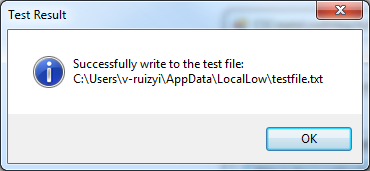
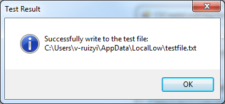

Create low-integrity process in C# (CSCreateLowIntegrityProcess)
Create low-integrity process in C# (CSCreateLowIntegrityProcess)
Introduction
The code sample demonstrates how to start a low-integrity process. The application launches itself at the low integrity level when you click the "Launch myself at low integrity level" button on the application. Low integrity processes can only write to low integrity locations, such as the %USERPROFILE%\AppData\LocalLow folder or the HKEY_CURRENT_USER\Software\AppDataLow key. If you attempt to gain write access to objects at a higher integrity levels, you will get an access denied error even though the user's SID is granted write access in the discretionary access control list (DACL).
By default, child processes inherit the integrity level of their parent process. To start a low-integrity process, you must start a new child processwith a low-integrity access token by using CreateProcessAsUser. Please refer to the CreateLowIntegrityProcess sample function for details.
Running the Sample
You must run this sample on Windows Vista or newer operating systems.
1. Press F5 to run this application, and you will see following window if you are an administrator of this machine.

If you click Write to the LocalAppData folder button or Write to the LocalAppDataLow folder button, these operations will succeed.
 

2. Click Launch myself at low integrity level button, a new instance of this application will be launched.

If you click Write to the LocalAppData folder button, the operation will fail.

If you click Write to the LocalAppDataLow folder button, the operation will succeed.

Using the Code
A. Starting a process at low integrity
By default, child processes inherit the integrity level of their parent process. To start a low-integrity process, you must start a new child process with a low-integrity access token using the function CreateProcessAsUser.
To start a low-integrity process
1) Duplicate the handle of the current process, which is at medium integrity level by P/Invoking OpenProcessToken and DuplicateTokenEx.
2) P/Invoke SetTokenInformation to set the integrity level in the access token to Low.
3) P/Invoke CreateProcessAsUser to create a new process using the handle to the low integrity access token.
CreateProcessAsUser updates the security descriptor in the new child process and the security descriptor for the access token to match the integrity level of the low-integrity access token. The CreateLowIntegrityProcess function in the code sample demonstrates this process.
B. Detecting the integrity level of the current process
The GetProcessIntegrityLevel function in the code sample demonstrates how to get the integrity level of the current process.
1) Open the primary access token of the process with TOKEN_QUERY by P/Invoking OpenProcessToken.
2) P/Invoke GetTokenInformation to query the TokenIntegrityLevel information from the primary access token.
More Information
MSDN: Designing Applications to Run at a Low Integrity Level
MSDN: Understanding and Working in Protected Mode Internet Explorer